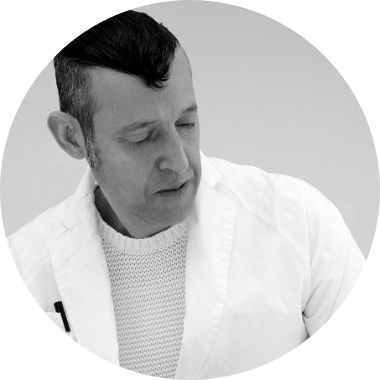
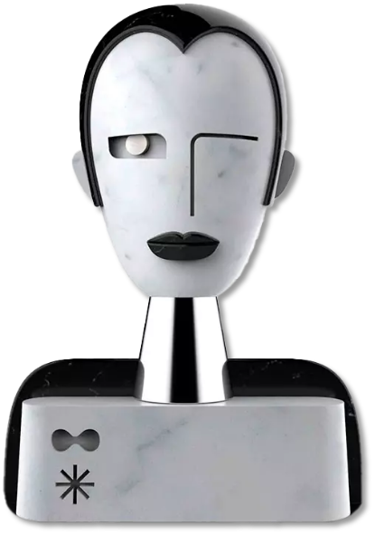

카림 라시드 Karim Rashid
1960년 카이로 출생
현재는 뉴욕에 스튜디오를 두고 전 세계를 종횡무진하며 활동하고 있는 산업 디자이너다.
핑크색, 형광 라임색 등 강렬한 색상군과 유기적인 곡선이 그의 디자인 특징이다.
"나의 디자인은 유기적인 디자인과 기하학적인 디자인이 결혼한 것 같다."

라시드는 자신의 디자인을 “나의 디자인은 유기적인 디자인과 기하학적인 디자인이 결혼한 것 같다. 또한 기술과 재료가 촉감, 시각적으로 편안함, 그리고 기쁨을 전달할 수 있는 부드럽고 친숙한 유기적인 형태를 가지기 위해 결혼한 것과 같다.” 고 했다.
[출처] www.karimrashid.com